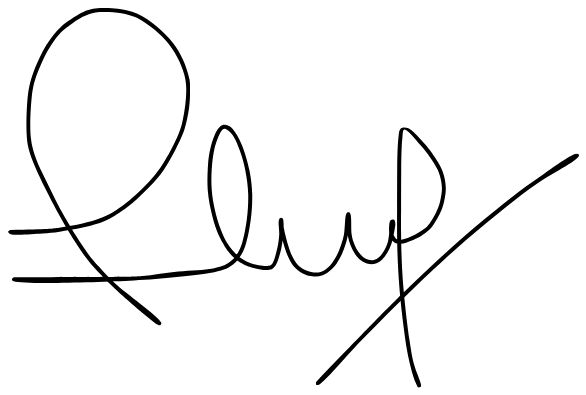

For All of Humanity
An Open Letter from Esteban David Maidana
Founder and CEO, Watoko
Four days ago, humanity left Earth.
For the first time in over fifty years, four human beings climbed aboard the most powerful rocket ever built, pointed it at the Moon, and went. Commander Reid Wiseman, receiving launch clearance, said simply: “We go for all of humanity.” And then the engines ignited, and the ground shook, and the sky cracked open, and they were gone.
I watched from the ground. Like you did. And I felt something I have not yet found the words for — not pride exactly, not awe exactly, but something older and more urgent. The feeling that arrives when human beings do something that should be impossible. When they look at the edge of what is known, step past it, and claim it.
From the Orion spacecraft, pilot Victor Glover looked back at Earth and said: “Trust us — you look amazing, you look beautiful. And from up here, you also look like one thing. Homo sapiens is all of us, no matter where you’re from or what you look like. We’re all one people.”
One people. One planet. One civilization-defining opportunity — and the only question that has ever mattered: will we rise to meet it?
I am writing this letter because I believe we are living inside one of the rarest moments in human history — a moment when the laws of what is possible are being rewritten. Not gradually. All at once. Artemis II is one expression of that rewriting.
What I am about to tell you is another.
Luisa
Before I tell you about Watoko, I need to tell you about my grandmother.
Her name was Luisa Dora Cajal. She lived in Buenos Aires. And every single day of her adult life, she did something I have never stopped thinking about.
The door of our home was always open.
More than a hundred children, women, and families would arrive each day — for lunch, for dinner, for the particular kind of nourishment that has nothing to do with calories and everything to do with belonging. The table was always set. The food was always there. A community gathered, without invitation, because Luisa had built the kind of place where people simply knew they were welcome. Around her, a circle of women formed — neighbors, friends, members of the neighborhood — who came together each day to cook, to serve, and to sustain something that had no name but needed none.
What she served was real food. Grown in soil. Cooked with hands. Shared at a table. Not extracted, not engineered, not designed for a shelf. Food the way it was meant to be — alive with the nutrients, the minerals, the biological complexity that the earth puts into what it grows when we let it grow properly.
This was not about helping people from above. It was about standing alongside them. Nurturing them. Creating the conditions under which a person could arrive at the fullness of what they were capable of becoming.
Luisa understood something with a clarity I have spent my whole life carrying forward: food is not a product. Food is not a market. Food is the invisible architecture of human potential. Feed a person well — with food that is genuinely nourishing, that carries the biological intelligence of the soil it came from — and you open a door. Let that nourishment be absent, or corrupted, or replaced by something engineered to resemble food while stripping away everything that makes food matter — and you have already quietly decided their future before they have had the chance to decide it themselves.
She did not wait for permission. She did not wait for a better system to arrive. She looked at what was needed, decided it was her responsibility, and built it — with her own hands, with the women around her — one meal at a time.
I carry her with me everywhere. Everything I have built — every company, every market, every system — moves in the direction she pointed. She was a force of nature. And the mission she gave me, without ever knowing she was giving it, is the mission I am writing to tell you about.
The World She Built Against
We live in a world that has learned to produce food in extraordinary quantities and distribute it with extraordinary failure — on both ends of the chain.
Eight hundred million people go without sufficient nourishment today. Not because the food does not exist, but because the system connecting it to the people who need it was never designed with them in mind. A third of everything grown on this planet never reaches a mouth. The most biodiverse continent on earth, holding sixty percent of the world’s remaining arable land, imports more than fifty billion dollars in food annually. The farmers who grow what humanity needs are among the poorest people alive.
But there is a second failure, quieter and in some ways more insidious.
The food that does reach people — the food that fills the shelves, that is marketed to children, that has become the default diet of billions — has been so industrially processed, so chemically altered, so stripped of its biological complexity in pursuit of yield, shelf life, and profit, that it is actively undermining the health of the people it claims to feed. We spray chemistry onto the land and wonder why the land produces less life. We extract the nutrients from food and add them back as supplements. We engineer products to hijack the body’s reward systems and call them meals. We have built a food system that is extraordinarily efficient at producing calories and extraordinarily poor at producing nourishment.
The chronic disease epidemic of the twenty-first century is not a mystery. It is the biological consequence of decades of treating food as an industrial output rather than a living system.
This is not a natural condition. It is a design failure. A failure of the infrastructure connecting production to people, land to capital, biology to science, soil to health, potential to reality.
The answer is not to go backward. It is to go forward — with the intelligence to understand what makes food actually nourishing, the systems to grow it at scale with biological integrity intact, and the science to connect what the earth grows to how long and how well the people who eat it live.
Luisa understood this intuitively, at a kitchen table in Buenos Aires, decades before the science caught up with what she knew. The food she served was grown in soil, cooked whole, shared in community. It was nourishment in the fullest sense — not just calories, but the biological complexity that the earth encodes into what it produces when it is treated with respect rather than extraction.
The failure I am describing is planetary in scale.
The answer has to match it.
The Journey Between
From Luisa’s table to here was not a straight line. It was a decade and a half of movement — across every continent, through every kind of operating environment — in search of something I could not yet name.
I studied Cognitive Sciences at Aarhus University in Denmark. The science of how intelligence emerges from parts that mean nothing alone. How systems process information. How connection creates meaning where isolation creates none. I did not know then that I was studying the architecture of what I would eventually build.
I spent more than a decade doing what most people do in one market, across every market on earth. North America. Europe. The Middle East. Southeast Asia. Latin America. Central America. Eastern and Southern Africa. Early hire at Mural — a multi-billion dollar design collaboration unicorn. Global Head of Growth at a YC-backed company, $15 million raised, led by Tiger Global, operating across four countries in Sub-Saharan Africa. Fintech, edtech, SaaS, agriculture, retail. I was inside Silicon Valley’s AI revolution as it was happening — watching in real time as the boundary between software and company dissolved, as small teams with the right infrastructure began to do what entire industries had required for decades.
I was at the frontier. I could see what was coming. And I could see — with increasing clarity, across every market I entered — the size of the gap between what technology could now do and the places where it had not yet been pointed.
In 2023, standing on the ground in East Africa, that gap became impossible to ignore.
What I Saw
Sixty percent of the world’s remaining arable land. Sixty-five thousand plant species. The most biodiverse ecosystems on earth. A food economy exceeding one trillion dollars annually. Two and a half billion people to feed by 2050. And farmers with extraordinary knowledge, extraordinary land, extraordinary potential — barely surviving on it.
Not because of any failure of their own. Because the infrastructure connecting their work to markets, capital, and services had never been built.
I thought of Luisa.
She had looked at a system failing the people in front of her and not waited for someone else to act. She had built the fix herself, with what she had, with the people around her.
I had spent fifteen years accumulating what she never needed — capital, networks, operational scar tissue earned across every major market on earth, and a front-row seat at the AI revolution that was quietly rewriting the rules of what a small team could build. And I had the most important thing of all: the moment. The precise, unrepeatable convergence of technology, urgency, and scale that makes the impossible not just possible but necessary.
I am not interested in building a better version of what already exists. I am interested in building what has never existed — because I believe it is the most important thing that can be built right now.
What I went back to build is not a tool for the agricultural industry. It is the agricultural industry — rebuilt as a system, from the ground up, for the first time.
Not technology serving itself. Technology serving humanity. AI not as a replacement for human knowledge and human judgment, but as the infrastructure that finally lets that knowledge reach its full expression — in the hands of farmers who have always known more about their land than any algorithm, and who have never had a system built to honor that knowledge.
That is a different kind of mission entirely.
Wa To Ko.
Three syllables. Each one alone is just a sound — a shape in the air without meaning, weight, or direction. But when the three arrive together, something emerges. A word. A company. A principle.
A single Lego brick has geometry, potential, and no expression. Add another. They interlock. Something neither contained alone begins to take form. A hundred bricks and you can build a city. A thousand and the only limit is imagination.
Watoko is that idea made into infrastructure — field intelligence, trade, operations, and science, all running as one system, getting smarter with every farm, every season, every discovery. The network belongs to everyone in it. The value it creates flows back to the farmers, the cooperatives, the buyers, and the communities that generate it. Watoko builds and operates the rails. The people riding them own the destination.
Born in Africa. Built for the world.
But built for more than any one world.
From Ground to Mars
Here is what most people do not yet see about what we are building.
Africa holds sixty-five thousand plant species. Indigenous organisms adapting to some of the most extreme environmental conditions on earth for longer than any continuously inhabited ecosystem anywhere on the planet. Biological strategies for survival and resilience refined by millions of years of evolutionary pressure — compounds, mechanisms, and molecular architectures that modern science has not yet thought to look for, because the infrastructure required to find them has never existed.
And here is the connection that changes everything: the same conditions that make African agriculture so challenging — extreme altitude, UV exposure, temperature variation, soil microbiomes unlike anywhere else on earth — are precisely the conditions that force biological adaptation. The organisms that survive here have solved problems that controlled laboratory environments cannot replicate. The soil of the Rwenzori highlands at 1,800 meters contains biological information that no pharmaceutical company has thought to study, because no one has ever had the infrastructure to collect it systematically at scale.
Until now.
Elon Musk wants to put humans on Mars because he believes the survival and expansion of human consciousness beyond this planet is the most important project our species can undertake. NASA is returning to the Moon to establish the infrastructure of a permanent human presence beyond Earth. These are the ambitions of people who refuse to accept the current limits of human civilization as final.
Watoko operates from the same refusal — applied to food and to biology. Food is the doorway. Biology is the room. We operate in complexity where others cannot. That is the discipline. That is the moat. That is the only place worth building from.
The questions that space agriculture must eventually answer — how do plants respond to extreme environmental stress, what metabolic pathways allow organisms to adapt to conditions they were never designed for, what has biology already perfected over millions of years of evolution in the harshest environments on earth — are the same questions that Watoko Labs is beginning to answer, from the ground, in the most biodiverse ecosystem on earth.
The Artemis II AVATAR investigation asks what happens to biology when we take it beyond the conditions it evolved for. Watoko Labs asks the inverse: what has biology already mastered, in the conditions it has been perfecting for millions of years, that we have not yet had the tools to discover?
These are not separate questions. They are the same question from opposite ends of the altitude spectrum.
A compound discovered in an indigenous fungal species in the Rwenzori highlands follows the same biochemical logic in a hospital in São Paulo, a research laboratory in London, and a closed-loop food system in lunar orbit. Biology does not recognize jurisdiction. The frontier of biological knowledge has no boundary — only territory that has not yet been explored.
Most of that territory is in Africa. Watoko is building the infrastructure to explore it. Not eventually. Now.
No One Goes Alone
No one goes to the Moon alone.
The Artemis II crew is American and Canadian. The service module was built by the European Space Agency. The scientific instruments came from Argentina, South Korea, and Saudi Arabia. The most powerful rocket ever launched flew because thousands of human beings — none of whom could do it alone — decided the mission was worth every one of them.
No one feeds humanity alone either.
The farmer who connects his cooperative to this network contributes something the engineer in Kampala cannot replicate. The researcher who sees what is hidden in the data contributes something the satellite cannot. The buyer who commits to verified supply makes it possible for the cooperative to invest in quality. The investor who moves first makes it possible for all of it to start.
Every person is a brick. Every connection is load-bearing. The mission holds because all of it holds together.
What This Is For
We are building this for every farmer who has fed the world and been left behind by the system they fed.
For every child who will be born in 2035, 2045, 2050 — into a world whose food infrastructure, whose biological knowledge, whose understanding of what the earth can produce and what it can heal, we are laying down right now.
For the researchers who will spend their careers answering questions that do not yet have names.
For the discoveries waiting in African soil that will change what medicine understands about cognition, immunity, and the architecture of a long human life — not just on this planet, but wherever we go.
For the farmers who knew their land better than any algorithm ever will — and who have never, until now, had a system built to honor that knowledge.
For every person who has looked at what the industrial food system has become and felt, in their body, that something essential has been lost — and who believes that the path forward is not more chemistry, not more extraction, not more engineering of food away from what it biologically is, but more intelligence applied to what the earth already knows how to do when we give it the conditions to do it.
For Luisa. Who understood before anyone told her that the act of nourishing another human being is not kindness. It is civilization.
Come Build It
This letter is not a pitch. It is an invitation.
The kind that comes once — in the window between when something is impossible and when it is obvious. The Apollo program had that window. The internet had it. Every foundational infrastructure project in human history had it — a moment when the people who moved first built the rails that everything afterward ran on.
We are in that window now. For food. For biology. For the science of life on this planet and beyond it. For a continent that holds the largest reservoir of potential on earth and has been waiting, for generations, for the infrastructure to connect it.
I have spent fifteen years building at the frontier. I have never been more certain of anything. Not about how it ends — no one knows how it ends — but about what is needed, why now, and whether the people who build it first will determine what the next century looks like for everyone who comes after.
The crew of Artemis II, speaking from a spacecraft a quarter of a million miles from Earth, said it the only way it could be said:
“Humanity’s next great voyage begins.”
So does ours.
This is not a moment to observe from a distance. It is a moment to enter. Whatever you carry — capital, knowledge, relationships, land, curiosity, conviction — there is a place for it here. Write to me. I want to hear from you.

Turn Earth's deepest biology into the food, the science, and the intelligence for better human life. On Earth and beyond.